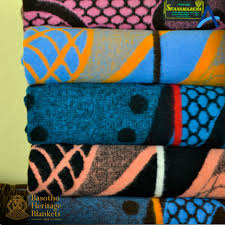
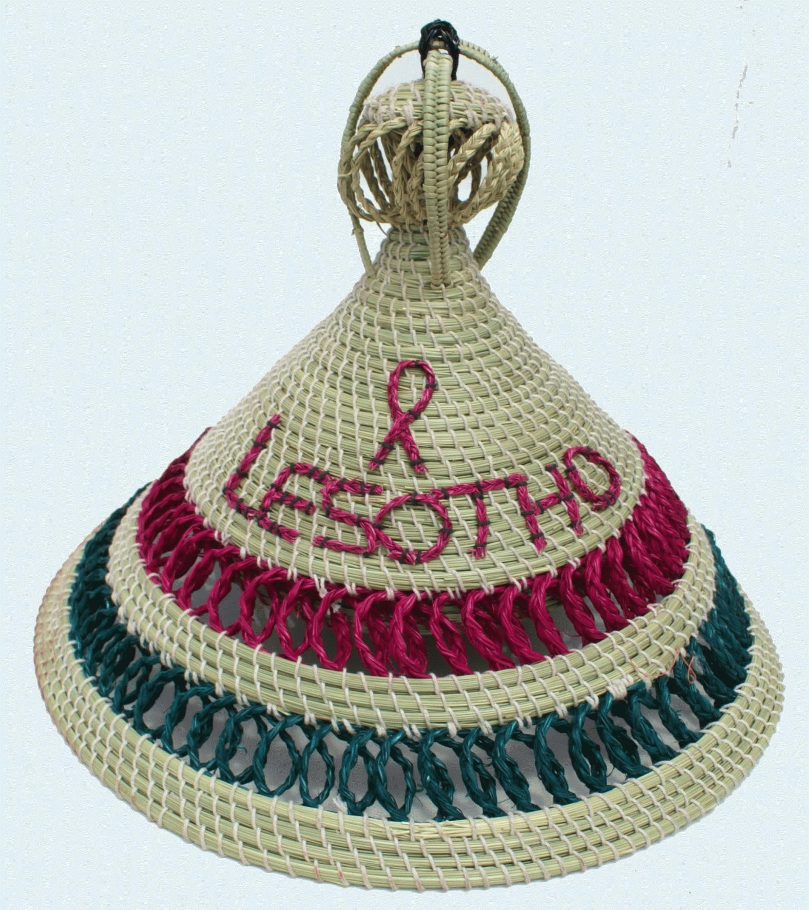
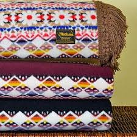
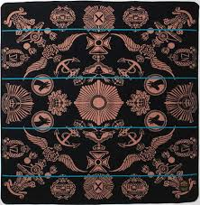
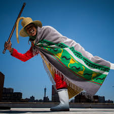
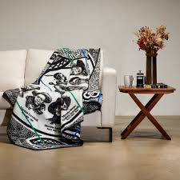
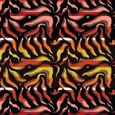
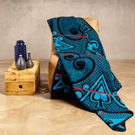
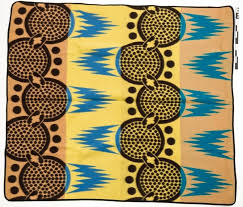
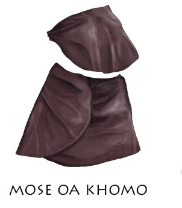

Seannamarena

A traditional Basotho woolen blanket from the kingdom of Lesotho, often called the "crown jewel" of Basotho blankets, and signifies pride, heritage, and leadership
See MoreMokorotlo

A traditional Basotho hat, made from woven grass (usually Mosea grass)
See MoreLetlama

A traditional Basotho woolen blanket that symbolizes unity, strength, and identity among Basotho people.
See MoreLekhokolo

A traditional Basotho blanket worn by young men in Lesotho after initiation ceremony, which confirms that they have reached adulthood See More
Lefokolo

Is one of the Traditional Basotho blankets, typically known for its striped design and often associated with younger men.
See MoreKhomo

A traditional Basotho blanket named after the word "Khomo", which means cow in Sesotho. It often features or symbols representing cattle.
See MoreMalakabe

A traditional Basotho blanket that means "flames" or "fire" in Sesotho, usually includes flame-like patterns, representing power.
See MoreMotlotlehi
.jpg)
A traditional Basotho blanket that represents royalty, honor, and respect for King of Lesotho.
See MorePelo ea morena

It symbolizes love, protection, and the deep connection between the king and his people. Design often features heart-like shapes, representing compassion.
See MoreSefate

A traditional Basotho blanket that means tree, represents growth, life, strength, and heritage. It may also symbolize family roots, and stability
See MoreSerope

It means stripes in Sesotho. Usually named after its striped pattern, which symbolize unity, order, and strength.
See MoreMotlatsi

A traditional Basotho blanket that represents support, leadership succession, or being a right-hand person to someone in authority - often the king or elder.
See MoreMose oa lekoko
.jpg)
A well-known respected Basotho traditional blanket that roughly means "the heirloom blanket" or the blanket of the clan/lineage. It symbolizes heritage, pride, and family identity
See MoreMakoti's blanket

It refers to the new beginnings, marriage, and transition into adulthood. It is a special blanket given to or worn by the bride during wedding ceremonies. See More
Sefatla

Basotho traditional shoes that are often handmade leather or hide footwear that complement traditional attire. See More
Poone blanket

A traditional Basotho blanket that features distinctive patterns and symbols. The design on the blanket usually include stylized maize motifs
See MoreSebeto

A traditional Basotho leather apron worn mainly by initiates during initiation ceremonies.
See More

Khokoloane

A traditionl Basoto blanket made from animal skin,usually sheepskin or goatskin..see more
Mose oa khomo

A traditional Basotho blanket,and its name means "the cow trail"or "cow's"path in Sesotho..see more
Lehlosi
A "Leopard"blanket ,symbol of strength and royality.see more

{kind=link}